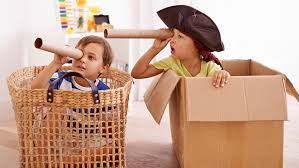

Why Creativity Matters
“Creativity is not a standalone concept but a fundamental part of holistic learning.”
— Lilian, Mokwunye & Anyanwu (2023)
Creativity in early childhood is more than artistic expression—it’s the foundation for curiosity, emotional growth, and flexible thinking. Children are born creators, using play, questions, and experimentation to make sense of their world. When we nurture this drive, we empower children to approach challenges with confidence and imagination.
Encouraging creativity helps children develop resilience, communication skills, and the ability to see multiple solutions to a problem. These skills are essential for lifelong learning and adaptability in a rapidly changing world.

Imaginative play sparks new ideas